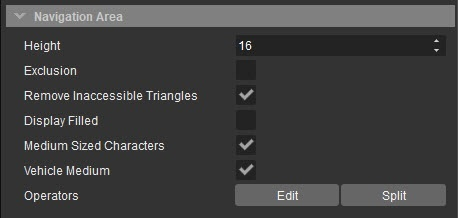
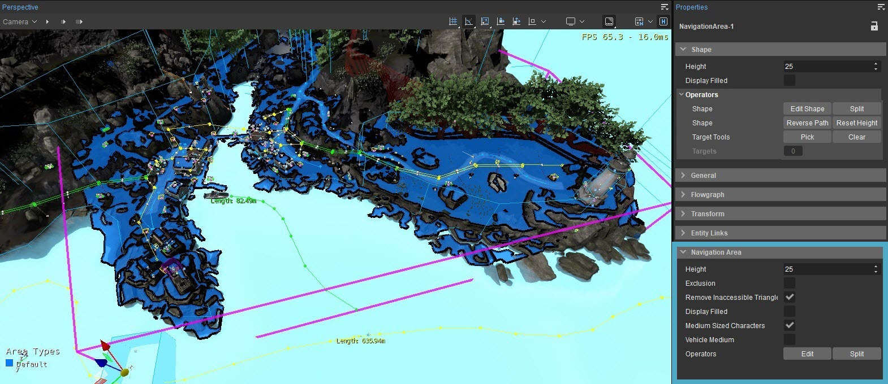
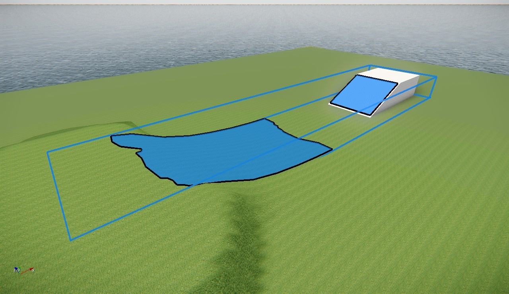
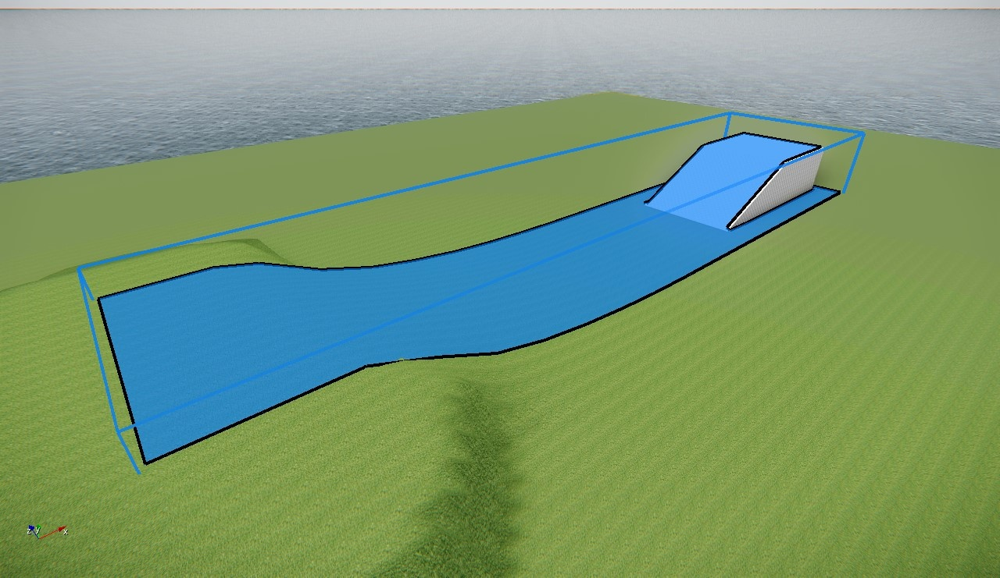
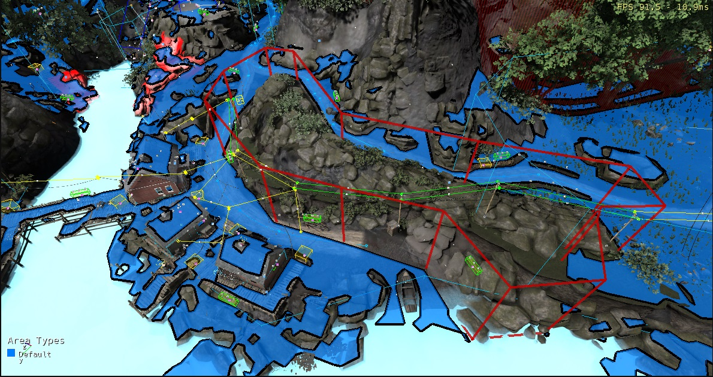
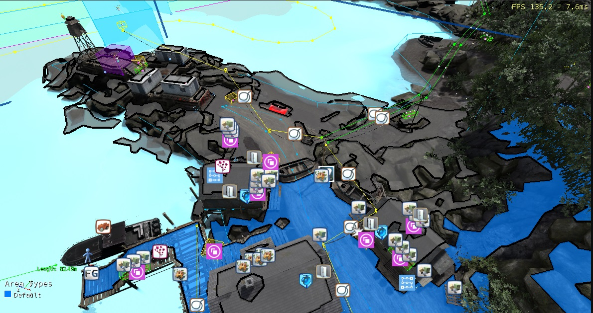
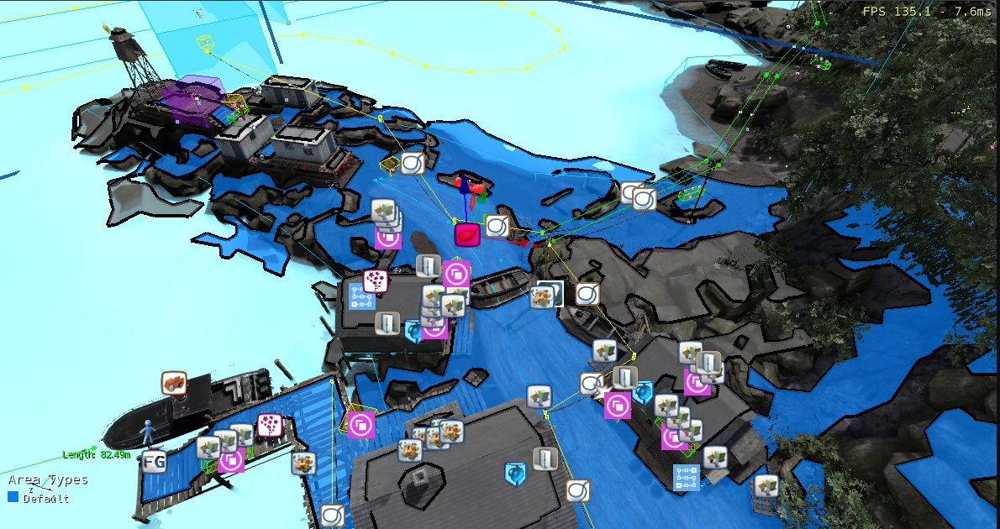
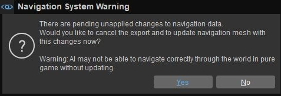

Обзор
Чтобы создать навигационные сетки, необходимо добавить области навигации на ваш уровень в редакторе. Ниже приводится простой обзор этого процесса.
Создание новой области навигации
Чтобы создать новую область навигации:
- Выберите AI → Область навигации вариант из Создать объект инструмент.
- На местности в видовом экране создайте фигуру, охватывающую область, внутри которой вы хотите, чтобы ваши персонажи AI перемещались.
- Выбрав область навигации, установите ее Высота имущество, находящееся под Область навигации вкладку инструмента «Свойства» в соответствии с вашими потребностями.
- Далее установите Тип агента области навигации, чтобы соответствовать типам агентов символов AI, которым необходимо использовать сетку навигации.
Флажки для доступных типов агентов перечислены в Область навигации панель инструмента «Свойства» под Дисплей заполнен флажок, как показано на рисунке ниже. Установите соответствующие флажки, чтобы установить тип агента области навигации.

Свойства области навигации
Типы агентов будут перечислены только в том случае, если они сначала определены и настроены в тот Navigation.xml файл, расположенный под ProjectFolder/Скрипты/AI/. См. типы агентов NavMesh. документация для получения дополнительной информации.
MediumSizedCharacters и VehicleMedium Типы агентов, изображенные на изображении выше, включены в пример проекта GameSDK.
Генерация NavMesh обрабатывается в отдельном потоке, чтобы не останавливать работу редактора. Чтобы увидеть созданную сетку, установите ai_DebugDrawNavigation CVar для 1, 2, или 3. Также установите ai_DebugDraw 1, или используйте Тип агента отладки навигации вариант из Игра → AI меню. На следующем снимке экрана показана созданная область навигации (фиолетовая фигура) и созданный внутри нее NavMesh.

Выбранная область навигации и ее свойства
Выравнивание поверхности формы
Создание областей навигации выше или ниже поверхности местности или объекта может помешать правильной генерации NavMeshes. Чтобы избежать этого, убедитесь, что вы разместили основание формы области навигации ниже местности/объекта, а ее верхнюю часть – над местностью/объектом, чтобы обеспечить достаточный зазор.
 |  |
| Область навигации слишком мала и не охватывает всю геометрию. | Правильный размер и расположение области навигации. |
Редактор Игра → AI меню содержит опции для визуализации и обновления областей навигации; Полный список опций и их функций см. Меню игрыдокументация.
Можно визуализировать NavMeshes внутри Программа запуска игр используя следующие CVar:
- ai_debugMNMAgentType AgentTypeName (например MediumSizedCharacters).
- ai_debugDraw 1.
- ai_debugDrawNavigation 1 (или одну из других опций, связанных с этой CVar).
Области исключения
Если вы не хотите, чтобы NavMesh создавался в определенной области существующей области навигации:
- Создайте новую область навигации внутри существующей области навигации.
- Из-под Область навигации вкладке в инструменте свойств, включите Исключение собственность новой области навигации.
Области, исключенные таким образом из области навигации, окрашены в красный цвет, чтобы указать, что AI не может использовать их для навигации внутри, как показано на изображении ниже.

Зона исключения отмечена красным
Зона исключения, расположенная в середине изображения выше, гарантирует, что NavMesh не будет генерироваться на пересеченной каменистой местности.
Доступность и исходные точки
Создание NavMesh вокруг нескольких объектов создает области, которые могут быть недоступны для символов AI во время поиска пути; эти недоступные области можно отфильтровать с помощью исходных точек. Обратитесь к Доступность и исходные точки документацию для получения дополнительной информации о размещении начальных точек и расчете доступности NavMeshes.
 |  |
| NavMesh вверху заблокирован лодкой (посередине), поэтому он недоступен (показан серым цветом). | Если недоступная часть NavMesh необходима для навигации с точки зрения дизайна уровня, внутри этой части можно разместить дополнительные исходные точки. |
Обновление навигации
Если в Sandbox включены обновления навигации, изменение карты уровня (например, добавление/удаление/перемещение объектов или изменение местности таким образом, что это влияет на навигацию) приводит к тому, что навигационная система автоматически пересчитывает NavMeshes, чтобы отразить эти изменения. Однако пересчитываются только те части NavMeshes, на которые влияют изменения.
Пользователи могут выбирать между тремя различными режимами обновления в разделе Игра → AI → Режимы обновления навигации меню, а именно Непрерывный, После изменения и Отключено. Полное описание их функций см. Меню игрыдокументация.
Вы можете легко определить, обновляется ли область навигации, по небольшому символьному значку, который отображается в левом верхнем углу экрана. Если необходимо обновить несколько NavMeshes, также может отображаться индикатор выполнения.
Многопоточность
По умолчанию обновления навигации выполняются в нескольких потоках, а количество различных заданий, которые могут выполняться в каждом потоке, указывается переменной ai_NavGenThreadJobs CVar (значение по умолчанию — 1).
Хотя увеличение этого значения может ускорить генерацию NavMesh, это также может привести к зависаниям в редакторе, поскольку результаты заданий генерации NavMesh применяются к NavMeshes в главном фрейме. Многопоточную генерацию можно отключить, установив значение параметра ai_NavigationSystemMT CVar для 0.
Обновление во время выполнения
Хотя автоматические обновления навигации отключены во время выполнения, части NavMeshes можно обновлять вручную. Чтобы узнать больше, обратитесь к Регенерация MNM во время выполнения документация.
Предупреждение навигационной системы
Пока навигация обновляется или части NavMeshes не обновлены, иногда при попытке экспортировать уровень вы можете получить «Предупреждение системы навигации». Это предупреждение предназначено для предотвращения нестабильного состояния навигации, и его не следует прерывать в целях безопасности.

Предупреждение навигационной системы